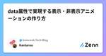

Gemcook Tech Blogのフィード
https://zenn.dev/p/gemcook
「好きな人を喜ばせるプロダクトを作る」をMissionに日々開発しています。モバイル/Webアプリの企画・UI/UX設計・開発・運用までサポート。TypeScript、React、React Native、Next.js、Go、Hono、AWS、Cloudflare、TiDB、B
フィード

週刊Cloudflare - 2024/11/24週 1
1
Gemcook Tech Blogのフィード
こんにちは、あさひです 🙋♂️今週はとても少ないですが、wrangler に影響ありそうな更新があるので早速見ていきましょう 🙌 この記事の主旨この記事では、Cloudflare のサービスにどんな変更があったかをざっくりと理解してもらい、サービスに興味を持ってもらうことを目的としています。そのため、変更点を網羅することを優先します。 2024/11/24 ~ 2024/11/30 の変更 Wrangler 3.91.0マイナーアップデートwrangler.json および wrangler.jsonc 構成ファイルのサポートがデフォルトで有効化されま...
3日前

data属性で実現する表示・非表示アニメーションの作り方
Gemcook Tech Blogのフィード
はじめにUI・UX向上のためにコンテンツを表示・非表示する際にアニメーションをつける。というのは良くある実装だと思います。しかし、実現する為の実装方法は一つではなく、どの方法が良いのか分からずに毎回モヤモヤが残る実装になっていました。data属性を使うことで、JavaScriptとCSSで責務を分けたシンプルな表示・非表示のCSSアニメーションが実装できたので紹介したいと思います。 作成するものボタンをクリックすると、アニメーション付きで表示・非表示になる <Card /> コンポーネントを持つページを作成していきます。!今回の実装ではdialogといった...
6日前

週刊Cloudflare - 2024/11/17週
Gemcook Tech Blogのフィード
こんにちは、あさひです 🙋♂️今週は更新多めですかね。早速見ていきましょう！🙌 この記事の主旨この記事では、Cloudflare のサービスにどんな変更があったかをざっくりと理解してもらい、サービスに興味を持ってもらうことを目的としています。そのため、変更点を網羅することを優先します。 2024/11/17 ~ 2024/11/23 の変更 Wrangler 3.90.0マイナーアップデートローカルの AI fetcher が HTTP メソッドと URL パス名を上流に転送するように修正。パッチアップデート依存関係の更新。@cloudfla...
10日前
TSKaigi Kansai 2024 参加レポート
Gemcook Tech Blogのフィード
こんにちは！株式会社Gemcookのバックエンドエンジニアのshunです。今回は2024年11月16日(土)に参加したTSKaigi Kansai 2024のレポートです。 TSKaigi Kansai 2024とはhttps://kansai.tskaigi.org/TSKaigi Kansai 2024とは、2024年5月に東京で開催した国内最大規模のTypeScriptのカンファレンスTSKaigi 2024の開催を受け、開催された初の地域型イベントです。「東京以外の地域も盛り上げよう！」ということで6月ごろから準備し始め、最終的にチケットは200枚完売したとのことです...
12日前
週刊Cloudflare - 2024/11/10週
Gemcook Tech Blogのフィード
こんにちは、あさひです 🙋♂️めっきり寒くなりましたね…周りからも寒いのは嫌という声が多いんですが、筆者としては暑いよりマシかも 😇さて軽めのものが多いですが、今週も見ていきましょう 🙌 この記事の主旨この記事では、Cloudflare のサービスにどんな変更があったかをざっくりと理解してもらい、サービスに興味を持ってもらうことを目的としています。そのため、変更点を網羅することを優先します。 2024/11/10 ~ 2024/11/16 の変更 Wrangler 3.87.0マイナーアップデートtail_consumers が assets を持つ...
17日前
AWS CDK v2.163.0 で追加された gc コマンドで無駄なアセットを削除する
Gemcook Tech Blogのフィード
こんにちは、soso です！最近の AWS CDK v2.163.0 で cdk gc コマンドが unstable で追加されました。cdk 本体にコマンドが追加されるのはあまりないので、気になって調査&実際に試してみました。 結論cdk gc コマンドは溜まった不要なアセットを削除するためのコマンドCFn から参照されていないアセットを削除大規模なプロジェクトならコスト削減の効果があり小規模だと年間数十円程度のコスト削減に留まる gc コマンドとはgc はガベージコレクションの略で、不要なアセットを削除するためのコマンドです。Bootst...
19日前
週刊Cloudflare - 2024/11/03週
Gemcook Tech Blogのフィード
こんにちは、あさひです 🙋♂️今週もアップデートは少なめです！早速みていきましょう 🙌 この記事の主旨この記事では、Cloudflare のサービスにどんな変更があったかをざっくりと理解してもらい、サービスに興味を持ってもらうことを目的としています。そのため、変更点を網羅することを優先します。 2024/11/03 ~ 2024/11/09 の変更 Wrangler 3.86.0マイナーアップデートR2 バケットのr2.devパブリックアクセス URL を有効化、無効化、および取得する機能が追加されました。これにより、R2 バケットのパブリックアクセス設...
24日前
週刊Cloudflare - 2024/10/27週
Gemcook Tech Blogのフィード
こんにちは、あさひです 🙋♂️今週のアップデートは落ち着いているようですね 🤔 ただ、Wrangler 周りは割といろいろ更新があるので、しっかり押さえたいところ…では早速見ていきましょう 🙌 この記事の主旨この記事では、Cloudflare のサービスにどんな変更があったかをざっくりと理解してもらい、サービスに興味を持ってもらうことを目的としています。そのため、変更点を網羅することを優先します。 2024/10/27 ~ 2024/11/02 の変更 Wrangler 3.84.1パッチアップデートPages でユーザーが「ASSETS」という名前のバ...
1ヶ月前
React Native Skiaでふわふわ動くサークルを実装する。
Gemcook Tech Blogのフィード
こんにちは！ぞのりょーです。今回、React Native Skiaを使ってふわふわと動くサークルを実装しました。Skiaを使ったアニメーションの実装をしたことがなかったのですが、使ってみると意外とスムーズに実装ができたので、実装の方法についてまとめてみます。https://shopify.github.io/react-native-skia/ 成果物今回作成する最終的な成果物は以下のようなものになります。4つのサークルがふわふわとそれぞれ異なる動きで動いているようなUIを実装します。 開発環境今回開発している環境として、ReactNative、Expo、Skia等の...
1ヶ月前
週刊Cloudflare - 2024/10/20週
Gemcook Tech Blogのフィード
こんにちは、あさひです 🙋♂️Workflows が使えるようになったり、Vectorize の制限が緩和されたり、押さえておきたい更新が多そうですね。早速みていきましょう 🙌 この記事の主旨この記事では、Cloudflare のサービスにどんな変更があったかをざっくりと理解してもらい、サービスに興味を持ってもらうことを目的としています。そのため、変更点を網羅することを優先します。 2024/10/20 ~ 2024/10/26 の変更 WorkflowsWorkflows とは？Cloudflare Workers 上でワークフローを使用して耐久性のあるマル...
1ヶ月前
Next.jsの"use cache"の概要を掴みたいあなたへ
Gemcook Tech Blogのフィード
はじめに先日、Next.js Conf 2024が開催されました！(日本時間だと眠い時間帯でしたね...)https://nextjs.org/confそこで話題になったのが"use cache"ではないでしょうか？今回は以下のブログをもとに、"use cache"の概要について解説していきたいと思います。"use cache"がどんなものかを掴みたい人はぜひ最後までお読みください！https://nextjs.org/blog/our-journey-with-caching!"use cache"は2024/10/27段階ではまだexperimentalな機能であるた...
1ヶ月前
週刊Cloudflare - 2024/10/13週
Gemcook Tech Blogのフィード
こんにちは、あさひです 🙋♂️今週は過去一で更新が少なかった…😇 この記事ではなるべくアップデート情報を記載することを目的としていますが、本当に何もない時のことも考えておかないとですね 🤔では見ていきましょう 🙌 この記事の主旨この記事では、Cloudflare のサービスにどんな変更があったかをざっくりと理解してもらい、サービスに興味を持ってもらうことを目的としています。そのため、変更点を網羅することを優先します。 2024/10/13 ~ 2024/10/19 の変更 Wrangler 3.81.0マイナーアップデートwrangler-actio...
1ヶ月前
Workersで使えるようになったカナリアリリースを試してみる
Gemcook Tech Blogのフィード
はじめにこんにちは、あさひです。今回は今まで実験的に導入されていたカナリアリリースが Birthday Week で一般提供開始になったので試してみようと思います。https://blog.cloudflare.com/builder-day-2024-announcements/今回試すのはあくまで Workers の段階的デプロイとそれに関連する機能を試すことをメインとするので、Cloudflare アカウントの作成や Workers の詳細などについては扱いません。 カナリアリリースとはカナリアリリースとはアプリケーションやサービスの新バージョンを段階的にリリース...
2ヶ月前
週刊Cloudflare - 2024/10/06週
Gemcook Tech Blogのフィード
こんにちは、あさひです 🙋♂️バースデーウィークの反動なのかあまりアップデートはなさそう。さっといきましょう 🙌 この記事の主旨この記事では、Cloudflare のサービスにどんな変更があったかをざっくりと理解してもらい、サービスに興味を持ってもらうことを目的としています。そのため、変更点を網羅することを優先します。 2024/10/06 ~ 2024/10/12 の変更 WranglerWrangler で以下アップデートが入っています。基本的に現行のバージョンを追従するように紹介しようと思います。 3.80.4パッチアップデートwrangler...
2ヶ月前
useFocusEffectって？
Gemcook Tech Blogのフィード
はじめにみなさん、こんにちは！今回は、React NativeのReact NavigationでよくつまずきがちなuseEffectとuseFocusEffectの違いについてまとめてみました！両hooksともに似てるようで違うので、使い分けに悩んだ経験がある人も多いんじゃないでしょうか？ useFocusEffectって何？useFocusEffectはReact Navigationが提供してるカスタムフックです。画面がフォーカスされたときに何かしたい！っていう時に使用します。import { useFocusEffect } from "@react-navigat...
2ヶ月前
週刊Cloudflare - 2024/09/29週
Gemcook Tech Blogのフィード
こんにちは、あさひです 🙋♂️バースデーウィーク後ということもあり少し更新は落ち着いている印象ですかね 🤔 さっそく見ていきましょう 🙌 この記事の主旨この記事では、Cloudflare のサービスにどんな変更があったかをざっくりと理解してもらい、サービスに興味を持ってもらうことを目的としています。そのため、変更点を網羅することを優先します。 2024/09/29 ~ 2024/10/05 の変更 Wrangler 3.80.0マイナーアップデート--experimental-dev-env（省略形：--x-dev-env）オプションをwrangler...
2ヶ月前
Cloudflare Builder Day 2024で追加されたWorkers Logsを試してみる
Gemcook Tech Blogのフィード
はじめにこんにちは、あさひです！Cloudflare の Birthday Week イベントで Builder Day 2024 が 2024/09/26 に行われていました。今回はその中で発表された Workers Logs を試してみたいと思います。以下は Cloudflare の紹介ブログです。https://blog.cloudflare.com/builder-day-2024-announcements/本記事は Workers Logs の機能を試すことをメインとするので、Cloudflare アカウントの作成や Workers の詳細などについては扱いませ...
2ヶ月前
週刊Cloudflare - 2024/09/22週
Gemcook Tech Blogのフィード
こんにちは！あさひです 🙋♂️今週は Birthday Week の変更分があったりで更新多めです！早速キャッチアップしていきましょう。 この記事の主旨この記事では、Cloudflare のサービスにどんな変更があったかをざっくりと理解してもらい、サービスに興味を持ってもらうことを目的としています。そのため、変更点を網羅することを優先します。 2024/09/22 ~ 2024/09/28 の変更 Wrangler 3.78.12パッチアップデートQueues が正式に GA（一般提供）となったことを反映し、警告メッセージから「ベータ」という記載が削除...
2ヶ月前
すぐ消えてしまう要素をDevToolsで確認するTips集
Gemcook Tech Blogのフィード
はじめにこんばんは！皆さんは以下のようなすぐ消えてしまう要素をDevToolsで確認したいときはどうしますか？常に表示されるようにわざわざコードを修正してから、DevToolsで要素を確認したりしていませんか？DevToolsをうまく使うことで、わざわざコードの修正をせずとも簡単に要素の確認をできるのでそのちょっとしたTipsのご紹介です！ ① CSSイベントでの確認方法まずはCSSイベントで要素の表示制御を行っているパターンでの確認方法です。以下のようにCSSイベントのhoverで表示制御をしている要素を例にDevToolsで確認する方法を見ていきましょう！impo...
2ヶ月前
Cloudflare Builder Day 2024で追加されたWorkers Buildsを試してみる
Gemcook Tech Blogのフィード
はじめにこんにちは、あさひです！Cloudflare の Birthday Week イベントで Builder Day 2024 が 2024/09/26 に行われていました。今回はその中で発表された Workers Builds を試していきたいと思います。以下紹介のブログです。https://blog.cloudflare.com/builder-day-2024-announcements/今回試すのはあくまで Workers Builds の機能を試すことをメインとするので Cloudflare アカウントの作成や Workers の詳細などについては扱いません。...
2ヶ月前